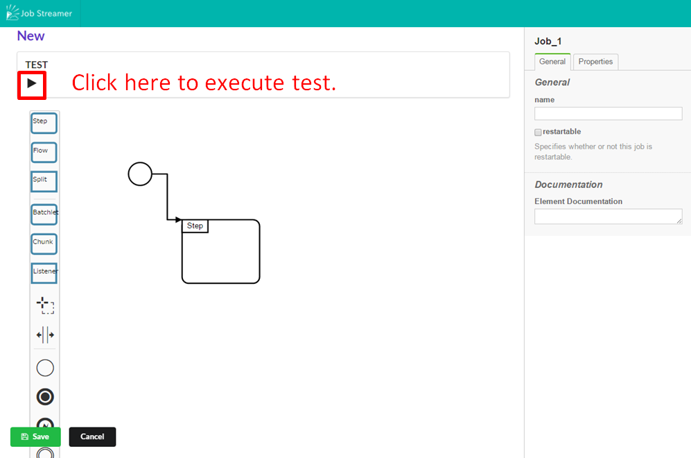
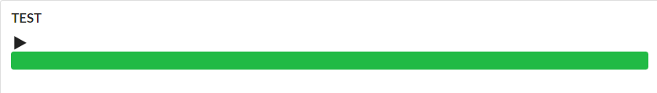
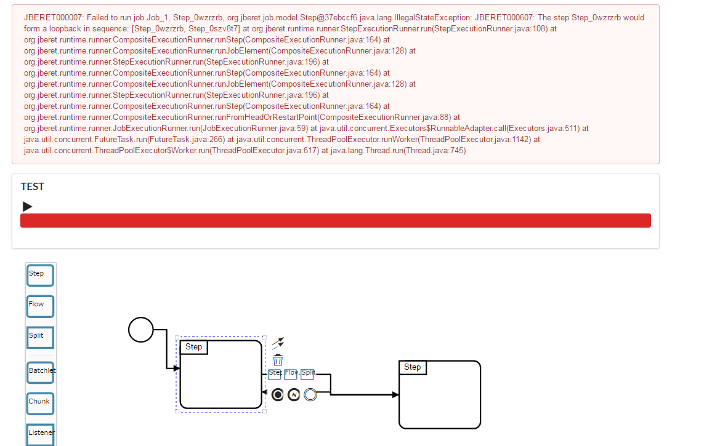

テストモード
テストモードとはjob作成時にjobの構造が正しいのかテストするための機能です
用途
テストモードでは例えば以下のようなjobを精査してくれます。
- stepがループしている
- step名が同じものが存在している
使用方法
1.job作成画面にてテスト実行ボタンを押下

2.すべてのstepがモックに置き換えられ実行される
3.成功した場合はプログレスバーが緑色になる

4.失敗した場合はプログレスバーが赤色になり、エラーログがconsoleに出力される

API
新規テスト実行
POST /test-executions
Request
{
:bpom "<?xml version=\"1.0\" encoding=\"UTF-8\"?>\n<bpmn:definitions xmlns:xsi=\"http://www.w3.org/2001/XMLSchema-instance\" xmlns:bpmn=\"http://www.omg.org/spec/BPMN/20100524/MODEL\" xmlns:jsr352=\"http://jsr352/\" xmlns:bpmndi=\"http://www.omg.org/spec/BPMN/20100524/DI\" xmlns:dc=\"http://www.omg.org/spec/DD/20100524/DC\" xmlns:di=\"http://www.omg.org/spec/DD/20100524/DI\" id=\"Definitions_1\" targetNamespace=\"http://bpmn.io/schema/bpmn\">\n <jsr352:job id=\"Job_1\" isExecutable=\"false\">\n <jsr352:start id=\"Start_1\">\n <bpmn:outgoing>Transition_0qj68gv</bpmn:outgoing>\n </jsr352:start>\n <jsr352:step id=\"Step_0wzrzrb\">\n <bpmn:incoming>Transition_1isxcy1</bpmn:incoming>\n <bpmn:incoming>Transition_0qj68gv</bpmn:incoming>\n <bpmn:outgoing>Transition_18mid3w</bpmn:outgoing>\n </jsr352:step>\n <jsr352:step id=\"Step_0szv8t7\">\n <bpmn:incoming>Transition_18mid3w</bpmn:incoming>\n <bpmn:outgoing>Transition_1isxcy1</bpmn:outgoing>\n </jsr352:step>\n <jsr352:transition id=\"Transition_18mid3w\" sourceRef=\"Step_0wzrzrb\" targetRef=\"Step_0szv8t7\" />\n <jsr352:transition id=\"Transition_1isxcy1\" sourceRef=\"Step_0szv8t7\" targetRef=\"Step_0wzrzrb\" />\n <jsr352:transition id=\"Transition_0qj68gv\" sourceRef=\"Start_1\" targetRef=\"Step_0wzrzrb\" />\n </jsr352:job>\n <bpmndi:BPMNDiagram id=\"BPMNDiagram_1\">\n <bpmndi:BPMNPlane id=\"BPMNPlane_1\" bpmnElement=\"Job_1\">\n <bpmndi:BPMNShape id=\"_BPMNShape_Start_2\" bpmnElement=\"Start_1\">\n <dc:Bounds x=\"173\" y=\"102\" width=\"36\" height=\"36\" />\n </bpmndi:BPMNShape>\n <bpmndi:BPMNShape id=\"Step_0wzrzrb_di\" bpmnElement=\"Step_0wzrzrb\">\n <dc:Bounds x=\"249\" y=\"136\" width=\"120\" height=\"100\" />\n </bpmndi:BPMNShape>\n <bpmndi:BPMNShape id=\"Step_0szv8t7_di\" bpmnElement=\"Step_0szv8t7\" isExpanded=\"true\">\n <dc:Bounds x=\"572\" y=\"166\" width=\"120\" height=\"100\" />\n </bpmndi:BPMNShape>\n <bpmndi:BPMNEdge id=\"Transition_18mid3w_di\" bpmnElement=\"Transition_18mid3w\">\n <di:waypoint xsi:type=\"dc:Point\" x=\"369\" y=\"186\" />\n <di:waypoint xsi:type=\"dc:Point\" x=\"471\" y=\"186\" />\n <di:waypoint xsi:type=\"dc:Point\" x=\"471\" y=\"216\" />\n <di:waypoint xsi:type=\"dc:Point\" x=\"572\" y=\"216\" />\n <bpmndi:BPMNLabel>\n <dc:Bounds x=\"486\" y=\"191\" width=\"0\" height=\"0\" />\n </bpmndi:BPMNLabel>\n </bpmndi:BPMNEdge>\n <bpmndi:BPMNEdge id=\"Transition_1isxcy1_di\" bpmnElement=\"Transition_1isxcy1\">\n <di:waypoint xsi:type=\"dc:Point\" x=\"572\" y=\"216\" />\n <di:waypoint xsi:type=\"dc:Point\" x=\"471\" y=\"216\" />\n <di:waypoint xsi:type=\"dc:Point\" x=\"471\" y=\"212\" />\n <di:waypoint xsi:type=\"dc:Point\" x=\"369\" y=\"212\" />\n <bpmndi:BPMNLabel>\n <dc:Bounds x=\"486\" y=\"204\" width=\"0\" height=\"0\" />\n </bpmndi:BPMNLabel>\n </bpmndi:BPMNEdge>\n <bpmndi:BPMNEdge id=\"Transition_0qj68gv_di\" bpmnElement=\"Transition_0qj68gv\">\n <di:waypoint xsi:type=\"dc:Point\" x=\"209\" y=\"120\" />\n <di:waypoint xsi:type=\"dc:Point\" x=\"229\" y=\"120\" />\n <di:waypoint xsi:type=\"dc:Point\" x=\"229\" y=\"177\" />\n <di:waypoint xsi:type=\"dc:Point\" x=\"249\" y=\"177\" />\n <bpmndi:BPMNLabel>\n <dc:Bounds x=\"244\" y=\"138.5\" width=\"0\" height=\"0\" />\n </bpmndi:BPMNLabel>\n </bpmndi:BPMNEdge>\n </bpmndi:BPMNPlane>\n </bpmndi:BPMNDiagram>\n</bpmn:definitions>\n"
}
input
| Name | Type | Description |
|---|---|---|
| bpmn | String | テスト実行したいbpmnファイル |
Response
{:state-id 1}
テスト実行状況取得
GET /test-execution/:state-id
Response
{:log-message "JBERET000007: Failed to run job Job_1, Step_1wdp5if, org.jberet.job.model.Step@762a8334", :log-exception "java.lang.IllegalStateException: JBERET000607: The step Step_1wdp5if would form a loopback in sequence: [Step_1wdp5if, Step_0mjwgb4]\n\tat org.jberet.runtime.runner.StepExecutionRunner.run(StepExecutionRunner.java:108)\n\tat org.jberet.runtime.runner.CompositeExecutionRunner.runStep(CompositeExecutionRunner.java:164)\n\tat org.jberet.runtime.runner.CompositeExecutionRunner.runJobElement(CompositeExecutionRunner.java:128)\n\tat org.jberet.runtime.runner.StepExecutionRunner.run(StepExecutionRunner.java:196)\n\tat org.jberet.runtime.runner.CompositeExecutionRunner.runStep(CompositeExecutionRunner.java:164)\n\tat org.jberet.runtime.runner.CompositeExecutionRunner.runJobElement(CompositeExecutionRunner.java:128)\n\tat org.jberet.runtime.runner.StepExecutionRunner.run(StepExecutionRunner.java:196)\n\tat org.jberet.runtime.runner.CompositeExecutionRunner.runStep(CompositeExecutionRunner.java:164)\n\tat org.jberet.runtime.runner.CompositeExecutionRunner.runFromHeadOrRestartPoint(CompositeExecutionRunner.java:88)\n\tat org.jberet.runtime.runner.JobExecutionRunner.run(JobExecutionRunner.java:59)\n\tat java.util.concurrent.Executors$RunnableAdapter.call(Executors.java:511)\n\tat java.util.concurrent.FutureTask.run(FutureTask.java:266)\n\tat java.util.concurrent.ThreadPoolExecutor.runWorker(ThreadPoolExecutor.java:1142)\n\tat java.util.concurrent.ThreadPoolExecutor$Worker.run(ThreadPoolExecutor.java:617)\n\tat java.lang.Thread.run(Thread.java:745)\n", :batch-status :batch-status/failed}